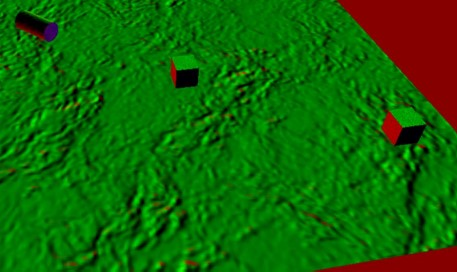

A Comparison and Analysis of Graphical Reflection Techniques
My dissertation project completed during my third year. I compared three different reflection techniques (Screen Space Reflection, Environment Maps and Stencil Buffers) to determine the scenarios in which each best excels.
Project Details
For my undergraduate dissertation I conducted an investigation into several different graphical reflection techniques before selecting a few specific methods, building up examples of each and then comparing them against a series of factors. I achieved a grade of 82%.
Prior to starting this project I had little experience with graphical programming or C++ so it also acted as an opportunity to learn as well. I explored several different reflection techniques before focussing my project on Screen Space Reflections (SSR), Environment Maps and Stencil Buffer Reflections. After researching the inner workings of these techniques, I developed working examples of each which I then used in a comparison and analysis against eachother and specific factors to determine which is best in a given scenario.
The 5 factors I compared the techniques to were Level of Detail, Reactivity to the Environment, Ease and Flexibility of Use, Effectiveness on different Surfaces and Performance Measured by Metrics. Through the development of the techniques and the results of the tests done relating to these factors, I was able to develop and understand these techniques better and how to analyse the effectiveness of different algorithms and methods
Image Gallery
 Environment map reflection.
Environment map reflection.

Visual representation of reflection directions.
 Stencil buffer reflection.
Stencil buffer reflection.